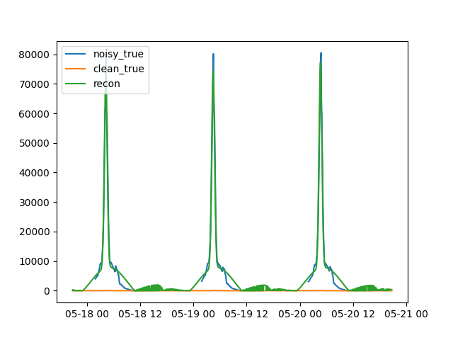

Note
Go to the end to download the full example code
Parametric Box-Wing Inversion#
395932.90177321265
395932.90177310974
395932.90177310846
395932.9017732114
395932.90177316125
395932.9017732178
395932.9017732239
395932.9017732042
395932.9017732077
395915.67372036766
395915.6737201192
395915.67372011987
395915.67372036516
395915.6737203155
395915.6737203767
395915.67372043733
395915.673720315
395915.67372035875
395691.7179530193
395691.7179520929
395691.7179521025
395691.71795301663
395691.71795296384
395691.7179530483
395691.7179540083
395691.71795219916
395691.7179529908
391656.9187104902
391656.9187061522
391656.9187062037
391656.9187104902
391656.9187104213
391656.9187104902
391656.9187104902
391656.9186992544
391656.9187103487
311438.73658887536
311438.7365704958
311438.7365707198
311438.73658887536
311438.73658879375
311438.73658887536
311438.73658887536
311438.7365196768
311438.73658846377
1805945.7204440031
1805945.7205791753
1805945.720577517
1805945.7204440031
1805945.7204442092
1805945.7204440031
1805945.7204440031
1805945.719944841
1805945.720444963
269618.60015619406
269618.600141151
269618.60014133464
269618.60015619406
269618.6001561326
269618.60015619406
269618.60015619406
269618.60009520355
269618.6001557986
251041.15214030648
251041.15214558292
251041.15214551843
251041.15214030648
251041.1521403035
251041.15214030648
251041.15214030648
251041.15212532107
251041.15214011888
250389.1357801006
250389.1357794704
250389.13577947815
250389.1357801006
250389.13578008217
250389.1357801006
250389.1357801006
250389.1357528505
250389.13577984978
250269.74738390945
250269.74738489374
250269.7473848816
250269.74738390945
250269.74738389527
250269.74738390945
250269.74738390945
250269.74736009355
250269.7473836758
395728.14408399106
395728.14408399106
395728.14408399106
395728.14408399106
395728.1440839907
395728.14408399106
395728.14408399106
395728.14408399106
395728.14408402244
360710.2105342496
360710.21053424606
360710.2105342461
360710.2105342496
360710.2105339295
360710.2105342496
360710.2105342496
360710.2105348168
360710.2105374731
2496191.8902843907
2496191.8904309804
2496191.890429181
2496191.8902843907
2496191.890284611
2496191.8902843907
2496191.8902843907
2496191.889300772
2496191.8902853965
250269.23702053263
250269.2370216364
250269.2370216229
250269.23702053263
250269.23702051875
250269.23702053263
250269.23702053263
250269.236996977
250269.2370203002
250268.20623853285
250268.20623963632
250268.20623962287
250268.20623853285
250268.20623851905
250268.20623853285
250268.20623853285
250268.2062149841
250268.20623830042
250264.08607122963
250264.08607233182
250264.0860723183
250264.08607122963
250264.0860712158
250264.08607122963
250264.08607122963
250264.08604770814
250264.08607099706
250247.65273232397
250247.65273342092
250247.65273340745
250247.65273232397
250247.65273231
250247.65273232397
250247.65273232397
250247.6527089115
250247.65273209108
250182.67406527916
250182.67406635504
250182.6740663418
250182.67406527916
250182.67406526508
250182.67406527916
250182.67406527916
250182.67404229994
250182.67406504508
249934.6724010577
249934.6724020444
249934.67240203178
249934.6724010577
249934.67240104274
249934.6724010577
249934.6724010577
249934.67237976397
249934.6724008185
249123.89613424434
249123.89613479815
249123.89613479015
249123.89613424434
249123.8961342257
249123.89613424434
249123.89613424434
249123.89611901864
249123.89613398354
247677.08695627833
247677.08695569038
247677.0869557032
247677.08695627833
247677.08695611297
247677.08695627833
247677.08695627833
247677.086953054
247677.08695594335
246706.7653422345
246706.7653407948
246706.76534082784
246706.7653422345
246706.76534191318
246706.7653422345
246706.7653422345
246706.76534816856
246706.7653421836
246080.9465202459
246080.9465198286
246080.94651983344
246080.9465202459
246080.9465199283
246080.9465202459
246080.9465202459
246080.94652746542
246080.9465202723
244991.34346718233
244991.34346798767
244991.34346798266
244991.34346718233
244991.34346688335
244991.34346718233
244991.34346718233
244991.34347491356
244991.3434673335
243158.8624730601
243158.86247537393
243158.86247542352
243158.8624730601
243158.86247279274
243158.8624730601
243158.8624730601
243158.86248001677
243158.86247340962
239881.76903488592
239881.76903802907
239881.76903867384
239881.76903488592
239881.76903464456
239881.76903488592
239881.76903488592
239881.7690384428
239881.76903554355
236115.9358984764
236115.93589465081
236115.93588924676
236115.9358984764
236115.93589822378
236115.9358984764
236115.9358984764
236115.93588301397
236115.93589989448
229039.18814455988
229039.18814241356
229039.18813931188
229039.18814455988
229039.18814427563
229039.18814455988
229039.18814455988
229039.1881120363
229039.18814638554
216920.38728071368
216920.38728005046
216920.38727883148
216920.38728071368
216920.3872803721
216920.38728071368
216920.38728071368
216920.38720826604
216920.38728172833
204750.9212159614
204750.921222316
204750.92123316965
204750.9212159614
204750.92121571387
204750.9212159614
204750.9212159614
204750.9211729609
204750.9212106473
181893.1785994063
181893.17860430814
181893.1786161567
181893.1785994063
181893.1785991183
181893.1785994063
181893.1785994063
181893.1784899415
181893.17859742488
155816.57573131507
155816.575733905
155816.5757464676
155816.57573134772
155816.5757310087
155816.57573131507
155816.57573131507
155816.57573131507
155816.57573853806
166486.55853516085
166486.55853516608
166486.55853516085
166486.55853519955
166486.5585350333
166486.55853516085
166486.55853516085
166486.55853516085
166486.55855538292
139917.828792997
139917.8287930052
139917.828792997
139917.82879305803
139917.82879292592
139917.828792997
139917.828792997
139917.828792997
139917.8288079391
142195.19475782604
142195.19475783227
142195.19475782604
142195.1947578826
142195.19475804275
142195.19475782604
142195.19475782604
142195.19475782604
142195.1947390801
125027.22779357362
125027.22779358177
125027.22779357362
125027.22779364017
125027.22779362054
125027.22779357362
125027.22779357362
125027.22779357362
125027.22779376584
113407.89040142152
113407.89040142593
113407.89040142152
113407.890401465
113407.89040145677
113407.89040142152
113407.89040142152
113407.89040142152
113407.89040410385
214682.11596484858
214682.11596210298
214682.11594488617
214682.11596484858
214682.11596449837
214682.11596484858
214682.11596484858
214682.1157926433
214682.1159504304
106804.77080887691
106804.7708088796
106804.77080887691
106804.77080890835
106804.7708088642
106804.77080887691
106804.77080887691
106804.77080887691
106804.77081530138
256553.57416218394
256553.57415852087
256553.57413851892
256553.57416218394
256553.57416192288
256553.57416218394
256553.57416218394
256553.57400023594
256553.5741412674
104842.61821929706
104842.61821929918
104842.61821929706
104842.61821932408
104842.61821925694
104842.61821929706
104842.61821929706
104842.61821929706
104842.61822705125
101819.70014927775
101819.70014927891
101819.70014927775
101819.70014929688
101819.70014920385
101819.70014927775
101819.70014927775
101819.70014927775
101819.70015724986
bwp_opt.wing_area=13032.910658319732 bwp_opt.scales=(302.3760812150996, 1e-08, 18.442076346973334) bwp_opt.brdf_box.cd=0.0 bwp_opt.brdf_wing.cd=0.0 bwp_opt.brdf_box.n=1e-08 bwp_opt.brdf_wing.n=113.5808254654818 bwp_opt.brdf_box.cs=1.0 bwp_opt.brdf_wing.cs=1.0
import datetime
from typing import Any
import numpy as np
from scipy.optimize import minimize
import mirage as mr
def construct_from_y(attitude, y: np.ndarray):
cd_wing = np.clip(y[4], 0, 1)
cd_box = np.clip(y[5], 0, 1)
y = np.clip(y, 1e-8, np.inf)
n_box, n_wing = y[6], y[7]
brdf_box = mr.Brdf(name="phong", cd=cd_box, cs=1 - cd_box, n=n_box)
brdf_wing = mr.Brdf(name="phong", cd=cd_wing, cs=1 - cd_wing, n=n_wing)
return BoxWingParametric(
attitude,
brdf_box,
brdf_wing,
x_scale=y[0],
y_scale=y[1],
z_scale=y[2],
wing_area=y[3],
)
class BoxWingParametric:
def __init__(
self,
attitude: mr.AlignedAndConstrainedAttitude,
brdf_box: mr.Brdf,
brdf_wing: mr.Brdf,
x_scale: float = 1.0,
y_scale: float = 1.0,
z_scale: float = 1.0,
wing_area: float = 1.0,
):
self.attitude = attitude
self.brdf_box = brdf_box
self.brdf_wing = brdf_wing
self.scales = (x_scale, y_scale, z_scale)
cube_template = mr.SpaceObject("cube.obj")
cube_template.v[:, 0] *= x_scale
cube_template.v[:, 1] *= y_scale
cube_template.v[:, 2] *= z_scale
self.box = mr.SpaceObject(vertices_and_faces=(cube_template.v, cube_template.f))
self.wing_area = wing_area
def eval(
self, dates: np.ndarray[datetime.datetime, Any], ovi: np.ndarray
) -> np.ndarray:
jd = mr.date_to_jd(dates)
eci_to_body = self.attitude.dcms_at_dates(dates)
vc_eci = self.attitude.const_interpolator(jd)
ovb = mr.stack_mat_mult_vec(eci_to_body, ovi)
vc_body = mr.stack_mat_mult_vec(eci_to_body, vc_eci)
# pl = pv.Plotter()
# mrv.plot3(pl, vc_body)
# mrv.plot3(pl, ovb)
# pl.show()
# eneddds
box_lc = self.box.convex_light_curve(self.brdf_box, svb=vc_body, ovb=ovb)
wing_lc = (
self.wing_area
* self.brdf_wing.eval_normalized_brightness(
L=vc_body, O=ovb, N=vc_body
).flatten()
)
return box_lc, wing_lc
def optimize(
self,
dates: np.ndarray[datetime.datetime, Any],
ovi: np.ndarray,
lc_unit_observed: np.ndarray,
):
valid_inds = ~lc_unit_observed.mask
def objective(y: np.ndarray) -> float:
bwpi = construct_from_y(self.attitude, y)
box_lc, wing_lc = bwpi.eval(dates, ovi)
err = np.linalg.norm(
lc_unit_observed[valid_inds] - (box_lc + wing_lc)[valid_inds]
)
print(err)
return err
opt_sol = minimize(objective, 0.5 * np.ones(8), options={"maxiter": 20})
return construct_from_y(self.attitude, opt_sol.x)
date_start = mr.utc(2023, 5, 20, 20, 45, 0)
(dates, epsecs) = mr.date_linspace(
date_start - mr.days(3), date_start, 1e3, return_epsecs=True
)
station = mr.Station()
station.constraints = [
mr.SnrConstraint(3),
mr.ElevationConstraint(10),
mr.TargetIlluminatedConstraint(),
mr.ObserverEclipseConstraint(station),
mr.VisualMagnitudeConstraint(20),
mr.MoonExclusionConstraint(10),
mr.HorizonMaskConstraint(station),
]
obj = mr.SpaceObject("matlib_hylas4.obj", identifier="superbird 6")
# obj = mr.SpaceObject("matlib_tess.obj", identifier="NAVSTAR 62 (USA 201)")
r_obj_j2k = obj.propagate(dates)
sv = mr.sun(dates)
nadir = -mr.hat(r_obj_j2k)
attitude = mr.AlignedAndConstrainedAttitude(
v_align=nadir,
v_const=sv,
dates=dates,
axis_order=(1, 2, 0),
)
brdf = mr.Brdf("phong")
(lc_ccd_signal, aux_data) = station.observe_light_curve(
obj,
attitude,
brdf,
dates,
model_scale_factor=1,
use_engine=True,
show_window=True,
frame_rate=1000,
instances=1,
rotate_panels=True,
)
brdf_bwp = mr.Brdf("phong", cd=0.5, cs=0.5, n=10)
bwp = BoxWingParametric(attitude, brdf_bwp, brdf_bwp)
lc_noisy_adu = lc_ccd_signal()
lc_noisy_irrad = lc_noisy_adu / aux_data["sint"]
lc_noisy_unit_irrad = lc_noisy_irrad * (aux_data["rmag_station_to_sat"] * 1e3) ** 2
invalid_inds = np.isnan(lc_noisy_unit_irrad)
ovi = mr.hat(aux_data["station_pos_eci"] - aux_data["object_pos_eci"])
ovb = mr.stack_mat_mult_vec(attitude.dcms_at_dates(dates), ovi)
bwp_opt = bwp.optimize(dates, ovi, lc_noisy_unit_irrad)
box_lc_opt, wing_lc_opt = bwp_opt.eval(dates, ovi)
print(
f"{bwp_opt.wing_area=}",
f"{bwp_opt.scales=}",
f"{bwp_opt.brdf_box.cd=}",
f"{bwp_opt.brdf_wing.cd=}",
f"{bwp_opt.brdf_box.n=}",
f"{bwp_opt.brdf_wing.n=}",
f"{bwp_opt.brdf_box.cs=}",
f"{bwp_opt.brdf_wing.cs=}",
)
import matplotlib.pyplot as plt
plt.plot(dates, lc_noisy_unit_irrad)
plt.plot(dates, aux_data["lc_clean_norm"])
plt.plot(dates, wing_lc_opt + box_lc_opt)
# plt.plot(dates, box_lc_opt)
# plt.plot(dates, wing_lc_opt)
plt.legend(["noisy_true", "clean_true", "recon"])
plt.show()
Total running time of the script: ( 0 minutes 15.445 seconds)